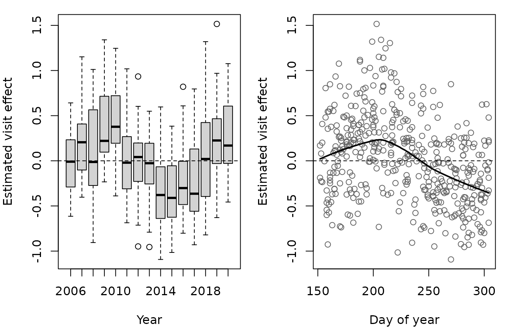
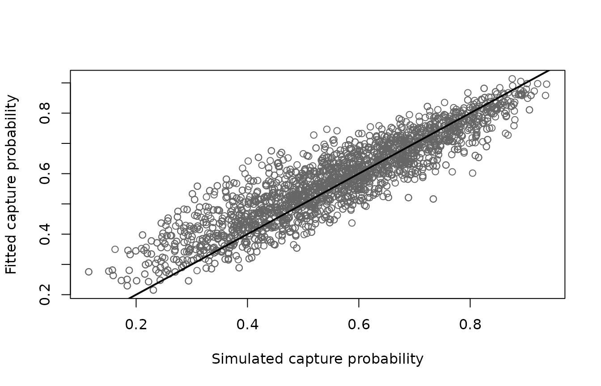

Capture probability usually varies between visits to a site, and between the samples taken on a visit, by more than covariates can explain. This worked example shows how to include that variation using random effects, how to choose between models, and how to look at the estimated effects.
The data
The data are simulated, as described in Simulating electrofishing data, so the estimates can be compared with the truth. There are 30 sites, each visited once a year for 15 years, with a sample of fry and a sample of parr on each visit and three passes for each sample.
Code to simulate the data
set.seed(2024)
nsite <- 30
years <- 2006:2020
# one visit to each site in each year
visits <- expand.grid(siteID = paste0("Site", 1:nsite), year = years)
visits$siteID <- factor(visits$siteID, levels = paste0("Site", 1:nsite))
nvisit <- nrow(visits)
visits$visitID <- factor(paste(visits$siteID, visits$year))
# sites are fished between June and October
visits$doy <- sample(152:304, nvisit, replace = TRUE)
# the area fished (m^2) is a property of the site
visits$area <- round(runif(nsite, 80, 250))[visits$siteID]
# smooth effects on logit capture probability
f_year <- function(year) 0.5 * sin(2 * pi * (year - 2006) / 12)
f_doy <- function(doy) 0.9 * exp(-((doy - 200) / 35)^2) - 0.45
# two samples per visit: fry and parr
samples <- merge(visits, data.frame(lifestage = c("Fry", "Parr")))
samples <- samples[order(samples$visitID, samples$lifestage), ]
samples$lifestage <- factor(samples$lifestage)
samples$sampleID <- factor(paste(samples$visitID, samples$lifestage))
nsample <- nrow(samples)
# random effects on logit capture probability
sigma_visit <- 0.4
sigma_sample <- 0.3
visit_effect <- rnorm(nvisit, 0, sigma_visit)
names(visit_effect) <- levels(visits$visitID)
samples$visit_effect <- visit_effect[as.character(samples$visitID)]
samples$sample_effect <- rnorm(nsample, 0, sigma_sample)
# the number of fish in the area fished
density <- c(Fry = 0.8, Parr = 0.4) # fish per m^2
site_effect <- rnorm(nsite, 0, 0.5)
samples$N <-
rpois(
nsample,
density[as.character(samples$lifestage)] * samples$area *
exp(site_effect[samples$siteID])
)
# three passes per sample
ef_sim <- merge(samples, data.frame(pass = 1:3))
ef_sim <- ef_sim[order(ef_sim$sampleID, ef_sim$pass), ]
rownames(ef_sim) <- NULL
# capture probability is lower after the first pass, and higher for parr
ef_sim$pass12 <- factor(pmin(ef_sim$pass, 2))
ef_sim$eta <-
0.3 +
0.5 * (ef_sim$lifestage == "Parr") -
0.4 * (ef_sim$pass12 == "2") +
f_year(ef_sim$year) +
f_doy(ef_sim$doy) +
ef_sim$visit_effect +
ef_sim$sample_effect
ef_sim$p <- 1 / (1 + exp(-ef_sim$eta))
# remove fish pass by pass
ef_sim$count <- NA
remaining <- samples$N
names(remaining) <- samples$sampleID
for (i in 1:3) {
ipass <- which(ef_sim$pass == i)
id <- as.character(ef_sim$sampleID[ipass])
ef_sim$count[ipass] <- rbinom(length(ipass), remaining[id], ef_sim$p[ipass])
remaining[id] <- remaining[id] - ef_sim$count[ipass]
}
head(ef_sim[c("visitID", "sampleID", "lifestage", "pass", "pass12", "count")])
#> visitID sampleID lifestage pass pass12 count
#> 1 Site1 2006 Site1 2006 Fry Fry 1 1 56
#> 2 Site1 2006 Site1 2006 Fry Fry 2 2 27
#> 3 Site1 2006 Site1 2006 Fry Fry 3 2 7
#> 4 Site1 2006 Site1 2006 Parr Parr 1 1 27
#> 5 Site1 2006 Site1 2006 Parr Parr 2 2 6
#> 6 Site1 2006 Site1 2006 Parr Parr 3 2 1The random effects were simulated with a standard deviation of 0.4 between visits and 0.3 between samples.
Fitting the models
Random effects are added to the formula using
s(f, bs = "re"), where f is a factor. Four
models are compared, all with fixed effects for lifestage and pass:
# no random effects
m_none <- efp(count ~ lifestage + pass12,
data = ef_sim, pass = pass, id = sampleID)
# variation between visits
m_visit <- efp(count ~ lifestage + pass12 + s(visitID, bs = "re"),
data = ef_sim, pass = pass, id = sampleID)
# variation between samples
m_sample <- efp(count ~ lifestage + pass12 + s(sampleID, bs = "re"),
data = ef_sim, pass = pass, id = sampleID)
# variation between visits, and between samples within visits
m_both <- efp(count ~ lifestage + pass12 +
s(visitID, bs = "re") + s(sampleID, bs = "re"),
data = ef_sim, pass = pass, id = sampleID)Model selection
The random effects are integrated out of the likelihood, so the models can be compared using AIC. Each random effect term adds one parameter, its standard deviation.
aic <- AIC(m_none, m_visit, m_sample, m_both)
aic$delta <- aic$AIC - min(aic$AIC)
aic
#> df AIC delta
#> m_none 3 130792.4 2258.16949
#> m_visit 4 128613.9 79.62552
#> m_sample 4 128762.3 228.00072
#> m_both 5 128534.3 0.00000Both sources of variation are needed: the model with visit and sample random effects has the lowest AIC by a long way, and the model with no random effects is much the worst.
m_both
#>
#> Call:
#> efp(formula = count ~ lifestage + pass12 + s(visitID, bs = "re") +
#> s(sampleID, bs = "re"), data = ef_sim, pass = pass, id = sampleID)
#>
#> Formula:
#> count ~ lifestage + pass12 + s(visitID, bs = "re") + s(sampleID,
#> bs = "re")
#>
#> Random effects:
#> Estimate Std. Error
#> sigma s(visitID) 0.5645 0.02634
#> sigma s(sampleID) 0.2592 0.02216
#>
#> Coefficients:
#> Estimate Std. Error z value Pr(>|z^2|)
#> (Intercept) 0.2810 0.03404 8.257 1.493e-16
#> lifestageParr 0.4760 0.02930 16.249 2.280e-59
#> pass122 -0.3473 0.01951 -17.800 7.009e-71
#>
#> Degrees of Freedom: 2700 Total (i.e. Null); 2695 Residual
#> AIC: 128500What the random effects are picking up
The estimated standard deviations are
m_both$sigma
#> s(visitID) s(sampleID)
#> 0.5644852 0.2592115The standard deviation between samples is a little below the 0.3 used in the simulation, but the standard deviation between visits is well above 0.4. This is because the model has no terms for year or day of the year, so the visit random effects are also absorbing the smooth effects of these two covariates.
This shows up when the estimated visit effects are plotted. They are
in random, in the order of the levels of the factor.
visit_hat <- m_both$random[grepl("visitID", names(m_both$random))]
visit_data <- unique(ef_sim[c("visitID", "year", "doy")])
visit_data <- visit_data[order(visit_data$visitID), ]
visit_data$estimate <- visit_hat
par(mfrow = c(1, 2), mar = c(4, 4, 1, 1))
boxplot(estimate ~ year, data = visit_data,
xlab = "Year", ylab = "Estimated visit effect")
abline(h = 0, lty = 2)
plot(estimate ~ doy, data = visit_data, col = "grey40",
xlab = "Day of year", ylab = "Estimated visit effect")
lines(lowess(visit_data$doy, visit_data$estimate), lwd = 2)
abline(h = 0, lty = 2)
There is a clear pattern against both covariates, which random effects should not have. Plots like these are a useful check on any model, and here they point to the model that is fitted in Smooth terms for year and day of the year, where the standard deviation between visits comes down to the simulated value.
Why the random effects matter
Leaving out the random effects changes the estimates of the fixed effects, and makes them look more precise than they are.
se <- function(m) sqrt(diag(vcov(m)))
round(
cbind(
estimate_none = coef(m_none), se_none = se(m_none),
estimate_both = coef(m_both), se_both = se(m_both)
),
3
)
#> estimate_none se_none estimate_both se_both
#> (Intercept) 0.332 0.015 0.281 0.034
#> lifestageParr 0.411 0.022 0.476 0.029
#> pass122 -0.442 0.019 -0.347 0.020The standard error of the intercept more than doubles when the random effects are included, and that of the lifestage effect is about a third larger, because fish from the same visit are no longer treated as independent information about capture probability. The estimate of the lifestage effect is also closer to the simulated value of 0.5.
Fitted values and predictions
Fitted values are conditional on the estimated random effects, so they are specific to each sample.
ef_sim$fit <- fitted(m_both)
plot(ef_sim$p, ef_sim$fit, col = "grey40",
xlab = "Simulated capture probability", ylab = "Fitted capture probability")
abline(0, 1, lwd = 2)
To predict for a typical visit and sample, rather than one of those
in the data, the random effects are left out of the prediction using
exclude.
newdata <- expand.grid(lifestage = c("Fry", "Parr"), pass12 = c("1", "2"))
pred <-
predict(
m_both, newdata = newdata, type = "response", se.fit = TRUE,
exclude = c("s(visitID)", "s(sampleID)")
)
cbind(newdata, p = round(pred$fit, 3), se = round(pred$se.fit, 3))
#> lifestage pass12 p se
#> 1 Fry 1 0.570 0.008
#> 2 Parr 1 0.681 0.008
#> 3 Fry 2 0.483 0.011
#> 4 Parr 2 0.601 0.010